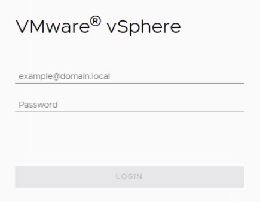
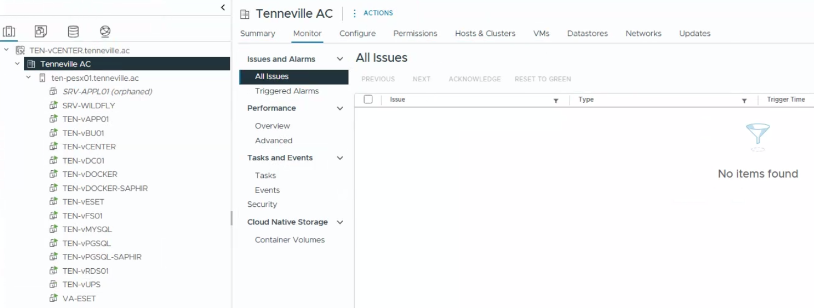

Tutorial – VMware Monitoring Checklist Verification
This check verifies that recent alerts and alarms related to ESXi hosts and virtual machines have been reviewed in the vSphere environment.
The purpose is to confirm visibility of active or recent alerts, if any, and to ensure that the environment has been monitored. This is a verification-only control.
No configuration or remediation is required. The checklist item may be validated even if no alerts are present, as long as the alert view has been reviewed.
Log in to the vSphere Web Client using a web browser. Access the vCenter instance via its IP address or FQDN.

Navigate to the monitoring and alarm views to review recent alerts:
Verify whether recent alerts are present. If alerts exist, confirm they have been reviewed. If no alerts are present, this is considered acceptable.

Note: This checklist item validates that recent alerts have been reviewed. It does not require the existence of active alerts.